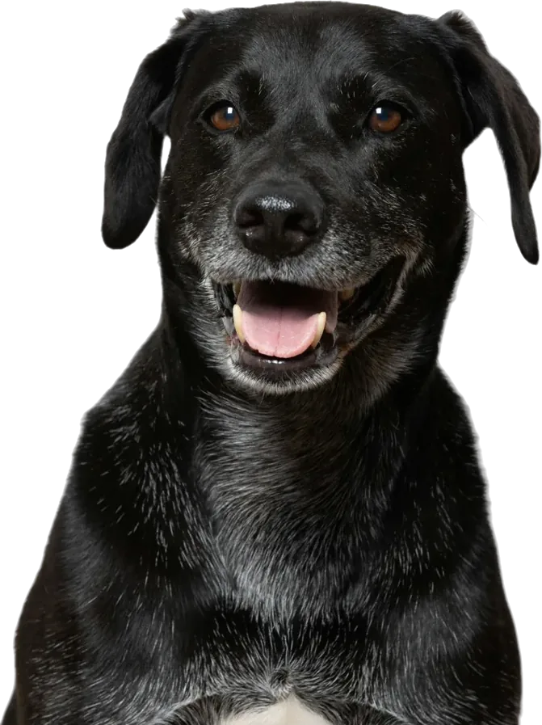

Consultas e internação
Consulta clínicaAcompanhamentoInternação 24h
Consultar pelo WhatsApp
Plantão 24 horas · 2º Distrito
Atendimento veterinário todos os dias, a qualquer hora, na Rua Horácio Spadare, 263, Vila Jotão, Ji-Paraná.

Deslize para o lado para ver todos →
Conheça os profissionais do hospital. A recepção informa a agenda de cada um.